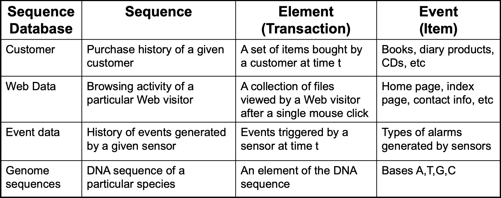
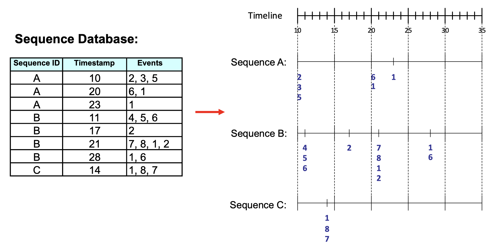
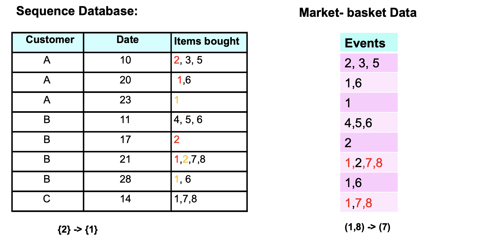
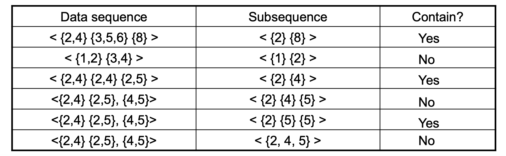
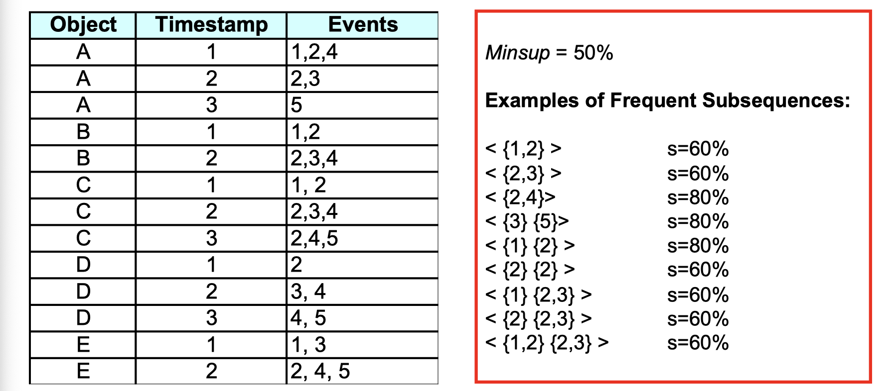
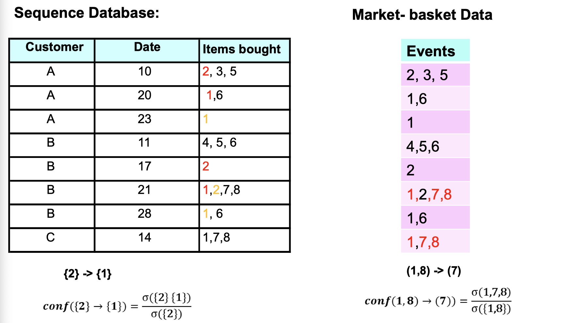
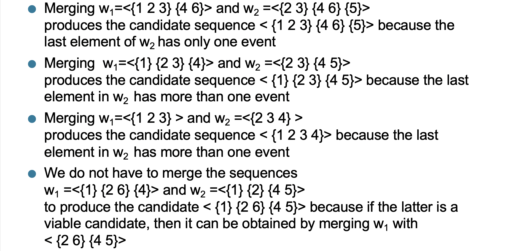
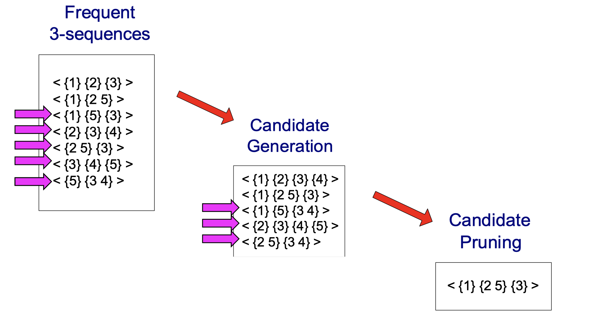

Association Rules: Advanced Concept
Acknowledgement: This course (CSCI 5523) is being offered by Prof. Vipin Kumar at the University of Minnesota in Fall 2020.
Data Mining: Advance Concepts of Association Analysis
Sequential Patterns
Example of sequence:
- Sequence of different transaction by a customer at an online store
<{Digital Camera, iPad} {Memory card} {headphone, iPad cover}> - Sequence of book checked out at a library:
<{Fellowship of the Ring} {The Two Towers} {Return of the King}> - more on the table below

How does the sequence data look like in database?

What does sequence data differ from market-basket data?

From Sequence data, we can tell people who bought item {2} would be likely to buy item {1} afterward on the next purchase. And Market-basket data tells us that people who bought item {1,8} would be likely to buy item {7} on the same purchase.
Formal def of sequence
A sequence is an ordered list of elements , when each element contains a collection of events(items)
. Length of a sequence
is given by the number of elements in the sequence. A k-sequence is a sequence that contains k events (items).
Visual def of subsequence

A subsequence is contained in another data sequence if each element of subsuence is a subset of a corresponding element of the data sequence. For the second row of the table, element {1} of subsuquence is a subset of element {1,2} of data sequence. Since {2} is a element in subsequence but it doesn’t have a corresponding element in data sequence, it’s not contained. Note that the order in subsequence doesn’t matter.
Sequential Pattern Mining
Now let’s talk about support again. The support of a subsequence is defined as the fraction of data sequences that contain
. A sequential pattern is a frequent subsequence (i.e., a subsequence where
). Suppose we’re given a database of sequences and a user-specified minimum support threshold (i.e., minsup), the task is to find all subsuquences with support greater than or equal to minsup. There is an example of frequent subsequences:

Here are only examples but not all the frequent subsequences. For instance, if we look at subsuquence <{1,2}>, since it’s a subset of sequence A B C out of A B C D E, the support of it is 60% which is higher than our specified minsup, so it’s a frequent subsequence.
After talking about support, let’s talk about confidence. The calculation of confidence here is different from normal transaction database (market-basket data).

How can we extract sequential patterns?
- Given
events:
- Candidate 1-subsequences:
- Candidate 2-subsequences:
- Candidate 3-subquences:
A 2 events example:

As you can see, the idea seems to be computational expensive here if we have many events. So we introduce a method called Generalized Sequential Pattern (GSP) to deal with it.
- Make the first pass over the sequence database D to yield all the 1-element frequent sequences
- Repeat until no new frequent sequences are found
- Candidate Generation: Merge pairs of frequent subsequences found in the (k-1)th pass to generate candidate sequences that contain k items
- Candidate Pruning: Prune candidate k-sequences that contain infrequent (k-1)-subsequences
- Support Counting: Make a new pass over the sequence database D to find the support for these candidate sequences
- Candidate Elimination: Eliminate candidate k-sequences whose actual support is less than minsup
What does “merge” mean above? Some example below:

A visual walk-through of candidate generation:

No matter which item I cross out in <{1} {2 5} {3}>, I can always find it in the frequent 3-sequences. For instance, if I cross out {1}, check if <{2 5} {3}> is in the frequent 3-sequences. If I cross out {2}, check if <{1} {5} {3}> is in the frequent 3-sequences. If I cross out {3}, check if <{1} {2 5}> is in the frequent 3-sequences. Do it for all cadidate generation and you will find only <{1} {2 5} {3}> survives, the others have been pruned.